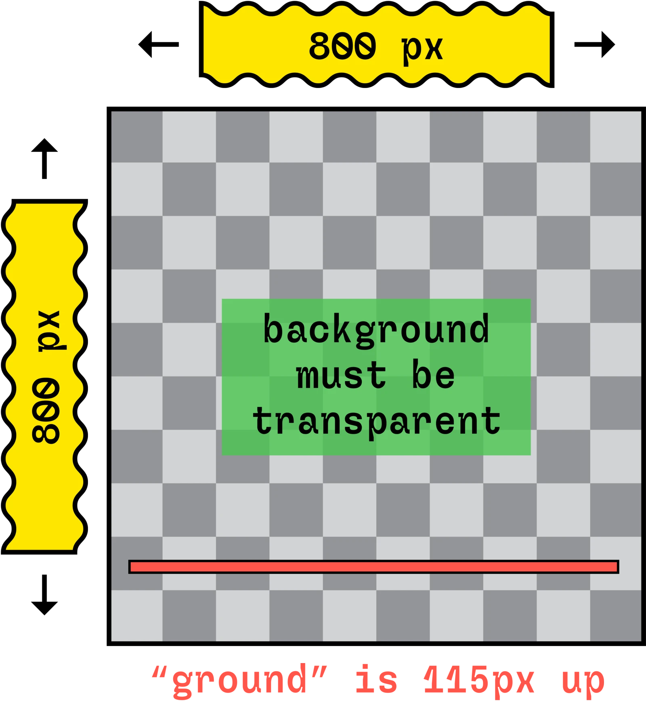
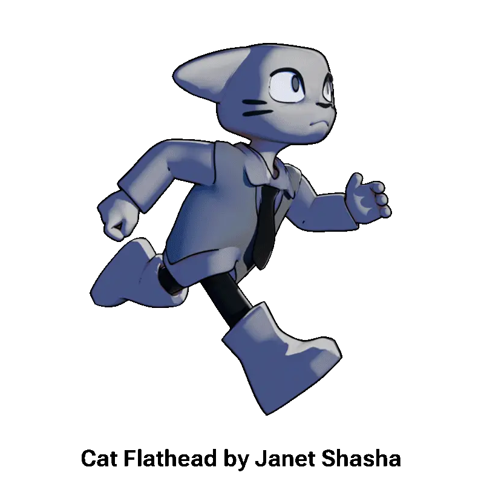
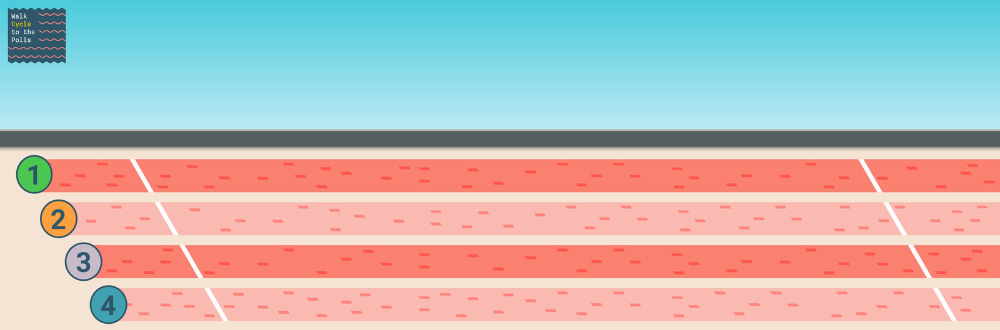
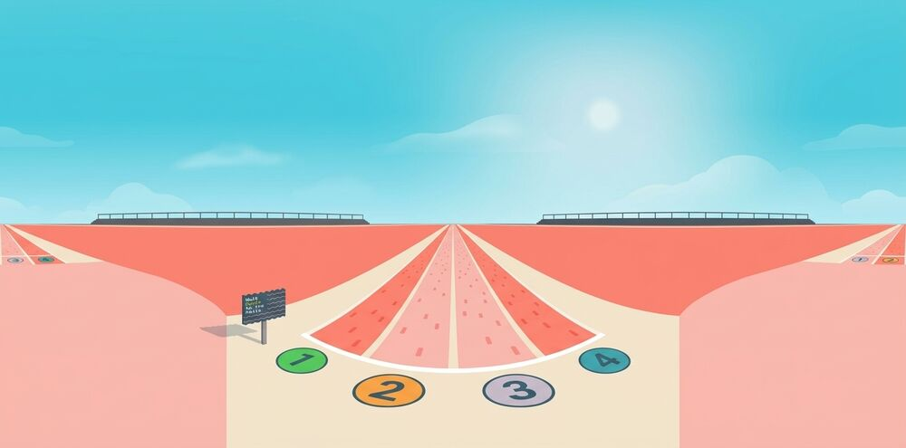

How to Submit a Walk Cycle
Three ways to get your character into the Walk Cycle to the Polls video game — whether you’re drawing for the first time or you animate for a living.
What the Game Needs
Every path ends in the same place: a single PNG sprite sheet with all of your frames lined up side by side, uploaded on the Upload a Walk Cycle page.
- Canvas
- 800 × 800 px
- Frames
- 8
- Background
- Transparent
- Ground line
- 115 px up from the bottom
- Sprite sheet
- 6400 × 800 px PNG
Use the Walk Cycle to the Polls Animation Tool
No software to install — everything happens in your browser, and the tool makes the sprite sheet for you.
- Open the Walk Cycle to the Polls Animation Tool and create a 1-, 4- or 8-frame animation.
- When you’re finished, click the Export PNG button. Then look in your Downloads folder for a single image file with all of your animation frames. This is your sprite sheet.
- Upload your sprite sheet to the game on the Upload a Walk Cycle page.
Use a Walk Cycle to the Polls Template
These templates are already set up with the right canvas size, 8 frames, a transparent background and the ground line, so you can go straight to animating.
The RoughAnimator template is a zipped .ra project folder — unzip it, then open or import the .ra folder in RoughAnimator.
Steps
- Download the template for your software (above).
- Complete your 8-frame animation using the template.
- Export a PNG sequence (8 separate PNG files) or a GIF with a transparent background.
- Create a sprite sheet by uploading your PNG sequence or GIF to the Sprite Sheet Maker.
- Find the sprite sheet in your Downloads folder.
- Upload the sprite sheet to the game on the Upload a Walk Cycle page.
Export tips for each program
Photoshop
Hide any background or reference layers. For a PNG sequence: File → Export → Render Video…, choose Photoshop Image Sequence, format PNG, and set Alpha Channel to Straight – Unmatted. For a GIF: File → Export → Save for Web (Legacy)…, choose GIF and make sure Transparency is checked.
RoughAnimator
Hide the paper/background layer, then export as a PNG sequence or GIF with a transparent background.
Blender (Grease Pencil or 3D)
The templates are set up for this, but double-check: Render Properties → Film → Transparent is on, and Output Properties is set to PNG, RGBA, 800 × 800 px at 100%, frames 1–8. Then Render → Render Animation.
Using Another Software?
Toon Boom, TVPaint, Procreate, Clip Studio, Animate, Krita, Maya — anything works, as long as your animation meets the file requirements for the Walk Cycle to the Polls video game:
- Canvas size: 800 × 800 px
- Frame count: 8
- Background: must be transparent
- Ground: your character’s feet should land on a line 115 px up from the bottom of the canvas
When you’re done, you have two options:
- Export a PNG sequence or GIF and turn it into a sprite sheet with the Sprite Sheet Maker, or
- Export a sprite sheet yourself: one PNG, 6400 × 800 px, with the 8 frames in a single row, in order from left to right, with no gaps or padding.
Then upload it on the Upload a Walk Cycle page.


Race Screen Backgrounds
Want to see how your character will look in the game, or match the lighting? Download the race track artwork.

2D Game Background
The actual background from the race screen in the game. Drop it behind your animation to preview how your character will look.
Download JPG (4536 × 1500){kind=link}

3D Environment Texture
A 360° panorama of the race track for 3D programs. In Blender, use it as an Environment Texture on the World so your character is lit like the race track.
Download JPG (1456 × 720){kind=link}